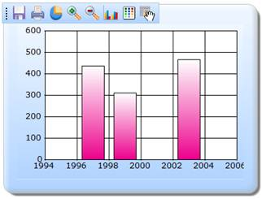

The steps to enable the ToolBar through Builder are as follows:
Step 1:
View:
Add the code displayed below in the view.
View [ASPX]
<%--Rendering the Chart through partial view--%>
<% Html.RenderPartial("PartialView", this.ViewData); %>
View [cshtml]
@*--Rendering the Chart Control--*@
@Html.RenderPartial("PartialView", this.ViewData)
Step 2:
PartialView:
By setting the ShowToolBar property to true, the ToolBar can be enabled. The ChartParams values can be got by using the ChartParamsArgs property. To get the updated chart, chart parameter values are used.
Add the code displayed below in the Partial View.
View [ASPX]
<%--Rendering the Chart Control--%>
<%=Html.Chart("chart_Model")
//Enabling the ToolBar Menu
.ShowToolBar(true)
//Getting the chart post parameter values from the controller
.ChartParamsArgs((ChartParams)ViewData["ChartParamsData"])
.Series(series=>{
series.Add().Points(points =>
{
points.Add().X(1997).YValues(new double[] { 437 });
points.Add().X(1999).YValues(new double[] { 311 });
points.Add().X(2003).YValues(new double[] { 466 });
})
.Type(Syncfusion.Windows.Forms.Chart.ChartSeriesType.Column);
})
.Skins(ChartModelSkins.Office2007Blue)
.ChartSeriesSkins(ChartSeriesSkins.Colorful)
.BorderAppearance(border => border.SkinStyle(Syncfusion.Windows.Forms.Chart.ChartBorderSkinStyle.Emboss))
%>
View [cshtml]
@*--Rendering the Chart Control--*@
@{ Html.Chart("chart_Model")
//Enabling the ToolBar Menu
.ShowToolBar(true)
//Getting the chart post parameter values from the controller
.ChartParamsArgs((ChartParams)ViewData["ChartParamsData"])
.Series(series=>{
series.Add().Points(points =>
{
points.Add().X(1997).YValues(new double[] { 437 });
points.Add().X(1999).YValues(new double[] { 311 });
points.Add().X(2003).YValues(new double[] { 466 });
})
.Type(Syncfusion.Windows.Forms.Chart.ChartSeriesType.Column);
})
.Skins(ChartModelSkins.Office2007Blue)
.ChartSeriesSkins(ChartSeriesSkins.Colorful)
.BorderAppearance(border => border.SkinStyle(Syncfusion.Windows.Forms.Chart.ChartBorderSkinStyle.Emboss))
.Render();
}
Step 3:
Controller:
Add the code displayed below in the Controller. The ChartParams class is used to get the post parameter values. The post parameter values will be passed to the view through the ViewData.
public ActionResult Index()
{
ChartParams ChartParamsData = new ChartParams();
ViewData["ChartParamsData"] = ChartParamsData;
return View();
}
[AcceptVerbs(HttpVerbs.Post)]
public ActionResult Index(MVCChartModel chartModel, ChartParams param)
{
//Passing the Chart post parameter values to the view
ViewData["ChartParamsData"] = param;
return PartialView("PartialView", this.ViewData);
}
Step 4:
Run the code, to get the following output.

Figure 328: Chart - ToolBar